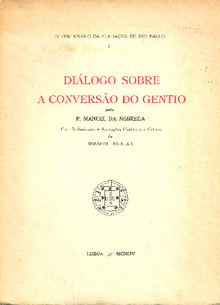

Manuel da Nóbrega (1517-1570) era um padre jesuíta que liderou a primeira missão da Companhia de Jesus no Brasil, com o intuito de catequizar os nativos que habitavam aqui naquela época. Ele nasceu no norte de Portugal em outubro de 1517 e mais tarde estudou no Porto, Coimbra e em Salamanca, entrando na Companhia de Jesus em 1544.
Assim, com a Companhia de Jesus, ele foi enviado ao Brasil em 1549 para liderar os jesuítas na missão de converter os indígenas ao catolicismo. No Brasil, fundou juntamente com José de Anchieta em 1553 o Colégio São Paulo, que se tornaria posteriormente a cidade de São Paulo.
As obras literárias de Manuel incluem diversas cartas com o intuito educacional, voltadas à catequização e educação dos indígenas. Suas principais obras são: Diálogo sobre a conversão do gentio, Informação das coisas da terra e necessidade que há para se proceder nela e Caso de Consciência para a Liberdade dos Índios. Curiosidade: Foi descoberto que Manuel era gago.
